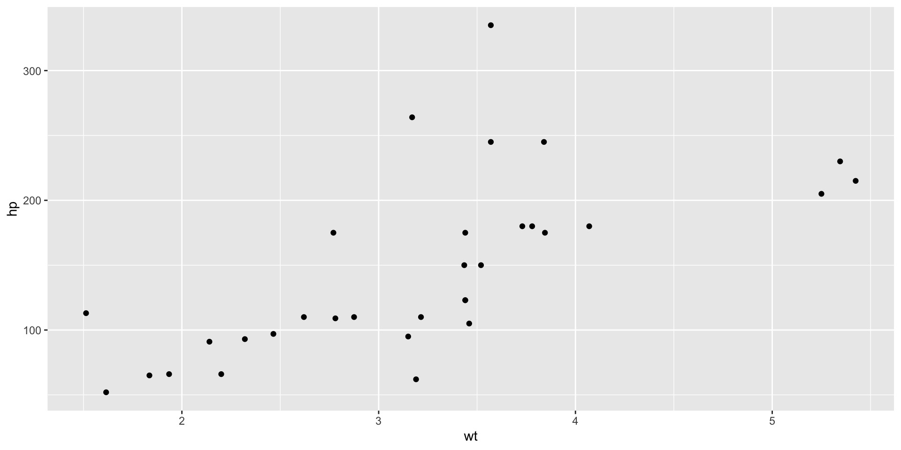
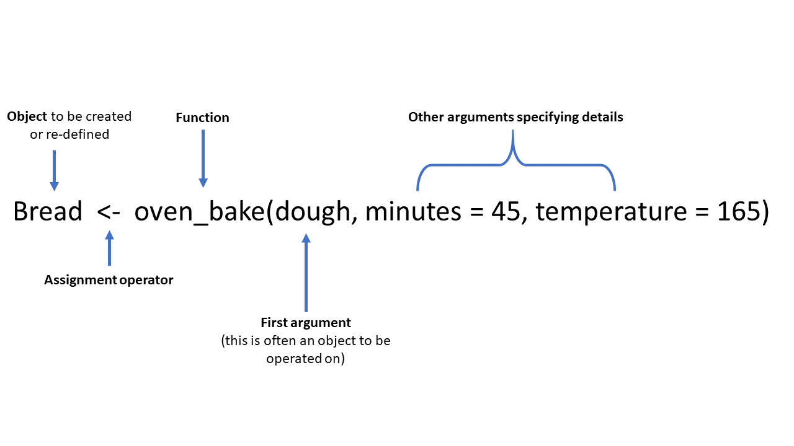

Learning objectives:
- Review some basic R coding.
- Follow good style conventions when writing code.
- Explain the importance of commenting your code.
- Recognize good practices when naming objects.
- Confidently call functions in R.
Basic math calculations
R is, in its most basic form, a calculator.
Create new objects
R is an object oriented programming language
Objects are data structures that hold bits of information in computer memory that we can access by calling their name or ‘passing’ them to a function
Objects can be referred to as variables in some cases
Create new objects
Use the ‘assignment operator’ <- to create new objects
The general format is name <- value
Windows: ‘ALT -’.
Mac: ‘Option -’.
Pronunciation: x <- 3*4
- “to … assign” or “is assigned to”: “To object x assign three by four” OR “three by four is assigned to object x”
- “gets”: “x gets 3 times 4”.
Create new objects: Reverse assign
Can go the other way ->, eg graphs:
Create new objects: Reverse assign
Can go the other way ->, eg graphs:
DO NOT DO THIS IN THIS CLASS!
Create new objects: Examples
Basic Data Types: Numeric
Basic Data Types: Character
Complex Objects: Vectors
names <- c("Bob", "Mary", "Melissa", "Angela", "Felicia")
names
[1] "Bob" "Mary" "Melissa" "Angela" "Felicia"
Combining elements
- Combine elements into a vector with
c()
- Basic arithmetic operations applied to every element of a vector.
primes <- c(2, 3, 5, 7, 11, 13)
primes * 2
Complex Objects: Graphs
library(ggplot2)
plot01 <- ggplot(mtcars, aes(wt, hp)) +
geom_point()
plot01

Complex Objects: Functions Results
primes #from the chunk above
prmMean <- mean(primes)
prmMean
Assigning names
- Names must start with a letter, contain letters, numbers,
_, ..
- Good style convention ➡️ more readable code.
- Use descriptive names. Long names are ok!
- Book recommends
snake_case (see next slide).
- I use
camelCase
- R is case-sensitive! And it can’t read your mind.
- Typos matter!
Assigning names: Cases
i_use_snake_case
otherPeopleUseCamelCase
some.people.use.periods
And_aFew.People_RENOUNCEconvention #anarchy
Assigning names: Cases
i_use_snake_case
otherPeopleUseCamelCase
some.people.use.periods
And_aFew.People_RENOUNCEconvention #anarchy
What matters most is consistency and readability!
Basic Function Structure

Calling Functions
Functions take in attributes and return results
Those results can be assigned into an object/variable for later use
Packages contain functions that have been written by others such as ggplot(), geom_point() , and mean()
There is overlap and many functions do the same things as other functions just with different and possibly faster implementations
Calling Functions: Arguments
- Can usually skip arg names, but can make code more readable.
- Order of named args isn’t important
- If you skip names remember the order of the defined function.
# All of these are equivalent
seq(from = 1, to = 10)
seq(to = 10, from = 1)
seq(1, 10)
#> [1] 1 2 3 4 5 6 7 8 9 10
That’s It! Have a great week!
Comments
Use
#to insert comments in R.